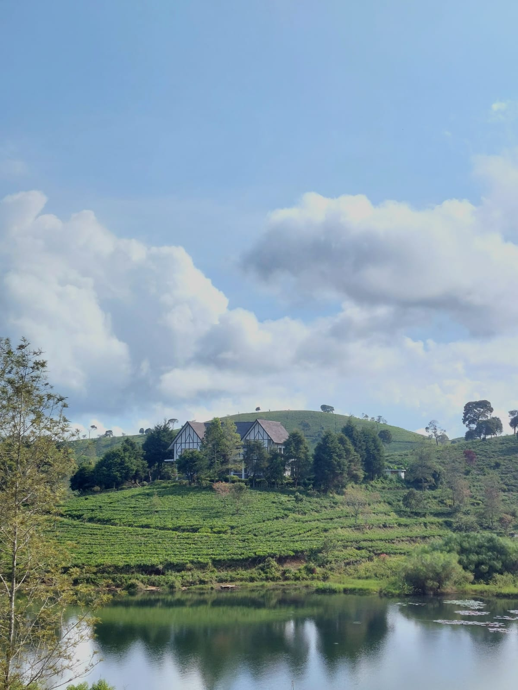
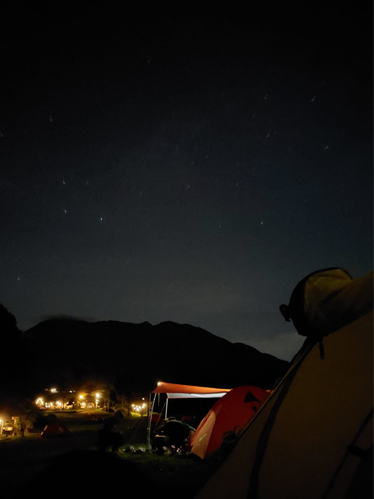

Resume
Ditulis oleh Fajar Aditya Ridwan pada tahun 2023
Hello, I'm Fajar Aditya Ridwan. I am 22 years old and live in Bekasi. I am a humble human being. My hobbies are climbing, reading books and also like photography of natural beauty. My dream is to become a technology expert and also an online business expert. I had the opportunity to continue my undergraduate education after graduating from high school for 3 years at the Budi Utomo Institute of Technology..
Fotografi
Aku suka traveling dan menyukai keindahalan alam. Oleh karena itu aku juga suka mengambil jepretan gambar dari handphone sederhanaku. Beberapa tangkapan dari hasil jepretanku.
1. Gunung Lawu
Gunung Lawu merupakan sebuah gunung yang terletak di pulau Jawa di negara Indonesia. Secara geografi, Gunung Lawu terletak di sempadan provinsi Jawa Tengah dan Jawa Timur. Pada sisi lereng sebelah timur terdapat danau bernama Telaga Sarangan juga serta air terjun. Di sebelah barat terdapat kawasan wisata Tawangmangu yang terkenal dengan air terjun Grojogan Sewu. Gunung Lawu mempunyai ketinggian setinggi 3,265 meter daripada aras laut. Menurut kata masyarakat umum gunung lawu terkenal dengan mistisnya, akan tetapi menurut saya pribadi Gunung Lawu selain mistis juga fantastis. Dengan keindahan yang ada di dalam nya. Saya sangat takjub dengan pesona Gunung Lawu tersebut.
2. Situ Cukul, Pangalengan, Bandung

Situ Cukul merupakan danau kecil yang berlokasi di tepian jalan di dalam area Perkebunan Teh Cukul. Salah satu pemandangan epik saat berkunjung ke Situ Cukul adalah perpaduan antara latar danau, kebun teh yang berbukit, dan vila Jerman di atasnya. Karena bukan termasuk tempat wisata yang dikelola pemerintah maupun pribadi, akses jalan menuju Situ Cukul terbilang kecil dan tidak ada ruang untuk parkir. Jika membawa kendaraan roda dua, kamu bisa memarkirnya di bahu jalan atau membawanya masuk melalui jalanan kecil menuju perkebunan teh.
3. Masjid Raya Al-Jabar
Tahukah Kawan kalau Jawa Barat kini memiliki Masjid Raya Al Jabbar? Pada akhir Desember 2022 kemarin, Gubernur Jawa Barat Ridwan Kamil meresmikan Masjid Raya Al Jabbar sebagai ikon baru Provinsi Jawa Barat. Masjid ini cukup luas dengan Arsitektur yang apik. Namun, dikarenakan aku kesini pada siang hari, panas nya sangat terasa karena hampir di semua area masjid bangunan lantai nya sudah keramik.
4. Camp Gayatri, Kabupaten Bogor

Salah satu tempat kemah terbaik yang menjadi tujuan para penikmat alam adalah Gayatri Camp. Berada di area lahan dengan luas sekitar 12 hektar dan dapat menampung hingga 1000 peserta, tempat kemah dengan view 2 gunung ini berada di ketinggian 1.000++Mdpl. Dekat dengan alam dan menikmati keindahan view gunung yang kokoh tegak berdiri disertai udara yang segar dan sejuk, kemah bersama keluarga maupun rekan kerja membuat badan terasa segar dan pikiran menjadi lebih fresh.